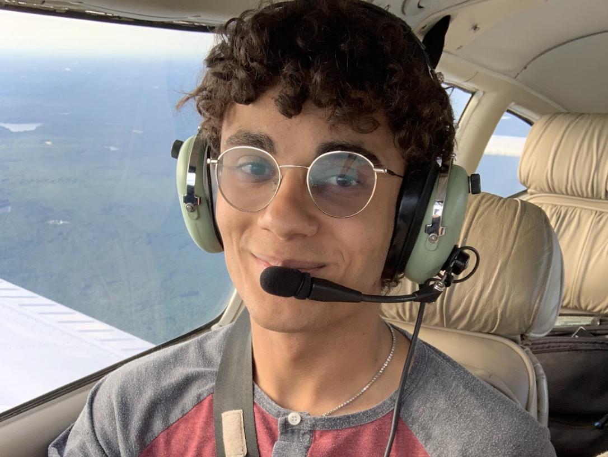

About Me

Mark Holden
I believe education isn't just something taught formally in class but a process, always taking place if you let it. I put this section last because this is just me on paper and people may be interested. However, if you want to learn about me, come find me, I'd probably love getting to know you too.
Education
Washington and Lee University
Computer Science (B.S)
Computer Science (B.S)
- Relevant Courses: Software Development, Linear Algebra, Computer Organization, Generative AI, Video Game Design, Data Structures and Algorithms, Discrete Math
- Major GPA: 3.800 CGPA: 3.589
Lexington, VA
Expected Graduation 05/2025
Expected Graduation 05/2025
Work Experience
Florence As It Was
Technical Assistant
Technical Assistant
- Goal: Recreate Florence from the 1500s in a VR environment to help people explore/learn about its history
- Technology used: Blender, Sketchup, Fusion, Reality Capture, Register360, Potree, HTC Vive, and more
- Primarily worked on texture designs, point cloud rendering, and data organization/presentation
Lexington, VA
08/2024–Present
08/2024–Present
Summer Research Scholar
Research Assistant
Research Assistant
- Analyze how information is sent through radio waves and what information about a user can be discovered
- Obtained an Amateur Radio License to legally transmit radio signals and gained experience with Linux
- Hardware Used: HackRF, Antennas, Portable Computers, and Flipper Zero
- Software Used: GNU Radio and Universal Radio Hacker
Lexington, VA
06/2024–08/2024
06/2024–08/2024
Washington and Lee University
RA in Freshman Housing
RA in Freshman Housing
- Advisor for 32 first-year students, program, enforce university policies, on-call shifts for campus security
- Foster a positive living environment and the development of relationships among residents and community
- Organized programs such as skydiving, caving trips, movie nights, hikes, class registration help, and holiday events
Lexington, VA
09/2022–Present
09/2022–Present
Washington and Lee University
Librarian Assistant
Librarian Assistant
- Helped patrons find resources, build relationships with donors, interact with kids and families
- Assist in minor tasks such as stacking books, checking in/out materials, unlocking and locking rooms
Lexington, VA
06/2024–08/2024
06/2024–08/2024
General Projects
Most of my coding related projects are on my code portion of this website(and you can check my GitHub). This is primarily for non-coding projects or activities.
GenTech
President
President
- Increased funding from 800 to 3000 dollars, brought membership from 60 members to 100+ members
- Organize trips to hackathons such as VTHacks, PennApps, HooHacks, and W&LHackathon; Won 4 Events
- Helped get members certifications, see guest speakers, build their ideas, go to hackathons, and practice for interviews
- Collaborate with many clubs/organizations on campus such as the Cybersecurity Club, AI Hub, and Women In Tech
Lexington, VA
10/2022–Present
10/2022–Present
Teaching ESOL Coding
Teacher
Teacher
- Created, proposed, and taught first ever coding session for a summer program called ESOL for Spanish kids
- Supported their creative designs/projects such as building a basketball game, music creation, and animation
- Implemented real-life exercises, PowerPoint slides, and coding projects in Scratch fit for 5th-7th graders
Lexington, VA
10/2022–Present
10/2022–Present
FUDG Remodel
Creative Designer
Creative Designer
- In charge of redesigning a social space on campus, moderated and overlooks redesign process
- Planned outline for new furniture, repainted walls, additional plans, lighting, and much more
Lexington, VA
10/2022–Present
10/2022–Present
XQ Institute
National Student Advisor
National Student Advisor
- Helped win XQ Grant ($500,000) for Ponaganset High School as a student
- Participated as a keynote speaker in the Aurora Institute Symposium
- Brainstorm solutions to potential/existing pitfalls of the educational system
Foster, RI
08/2017–08/2021
08/2017–08/2021